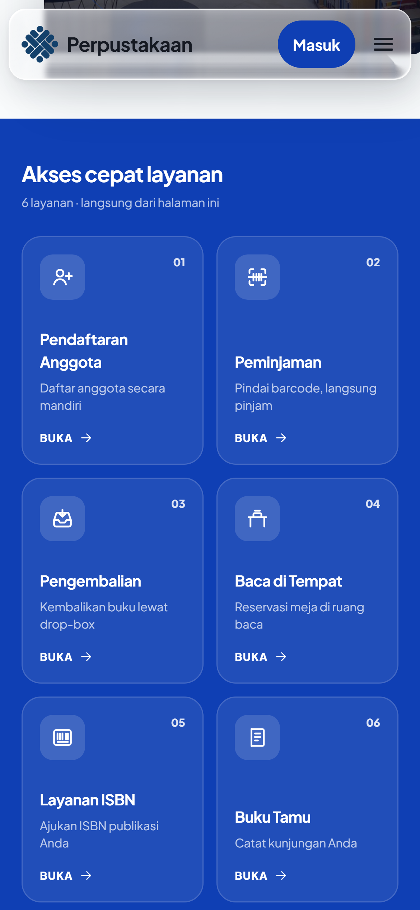
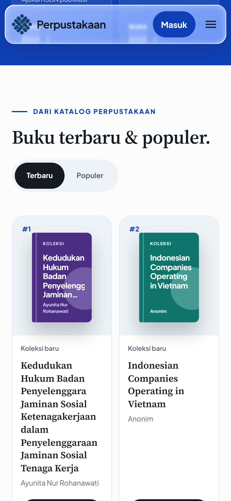
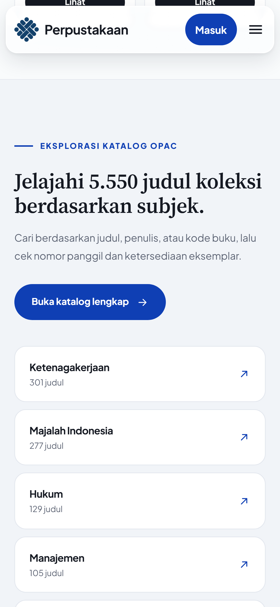
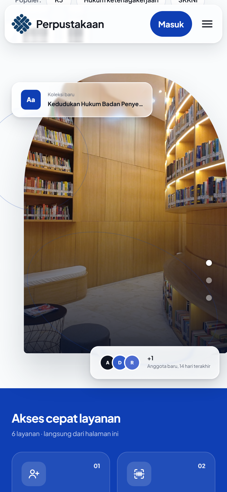

Perpustakaan Kemnaker,
halaman depan
Cari buku, regulasi, riset, hingga layanan perpustakaan dalam satu kolom pencarian.




Cari buku, regulasi, riset, hingga layanan perpustakaan dalam satu kolom pencarian.




Halaman depan portal perpustakaan untuk pegawai dan masyarakat. Pengunjung bisa mencari koleksi, membuka layanan mandiri, dan melihat buku terbaru tanpa berpindah halaman. Navbar berubah menjadi liquid glass saat halaman digulir.